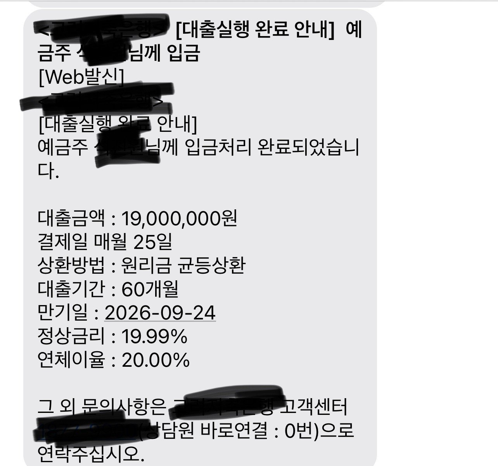

[프리랜서대출] 김용혁 이사님 감사합니다.
재직형태 : 프리랜서
재직기간 : 4개월
사대보험 가입유무 : 무
소득 : 연 2400만원
신용점수 : 600점 초과
채무내역 : 대부업 포함 1800만원
필요서류 : 초본,신분증,급여통장
근래 대출을 받은 기록이있어서 어디를 조회하든
대출이 안나오는 상황이었습니다.
생활비로 500만원 가량 필요한 상황이었는데
이사님께서 조회를 잘해주신 덕분에 1900까지 나왔네요.
감사합니다. 이사님
